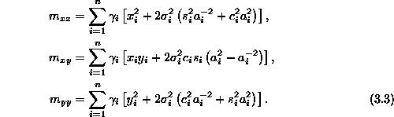
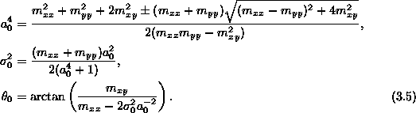
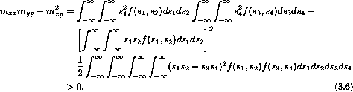

The zeroth and first moments are elementary to calculate and reveal that
The second moments of (2.5) with respect to , xy and respectively are

Shifting the origin to  , the parameters
, the parameters
 ,
,  and
and  are completely determined by
are completely determined by
Solving (3.4), one finds

Regarding the determination of in (3.5), we observe that the denominator can be expressed as

The fact that f is either uniformly nonnegative or uniformly 1 is essential for establishing this identity. To establish that the numerator is positive, we see that
However, the difference of the squares of these two quantities is
Thus, the numerator and denominator are both positive regardless whether one
adds or 2 the square root of the discriminant.
The two possible solutions correspond to reciprocal
values of and different solutions will result in perpendicular
values of  . Thus, conserving moments, one can determine all the
unknown parameters for the post-merger element.
. Thus, conserving moments, one can determine all the
unknown parameters for the post-merger element.